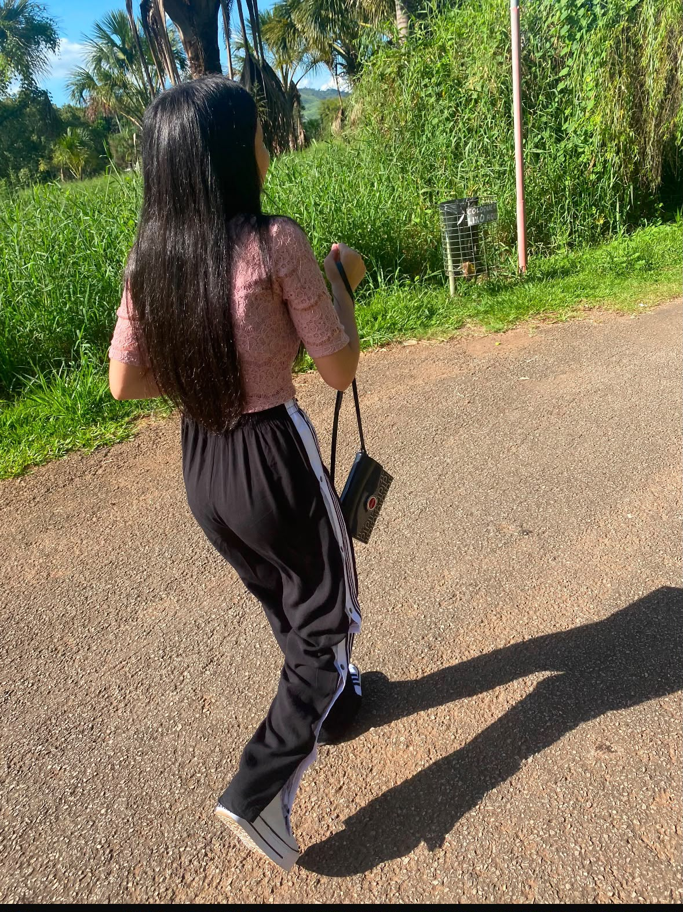
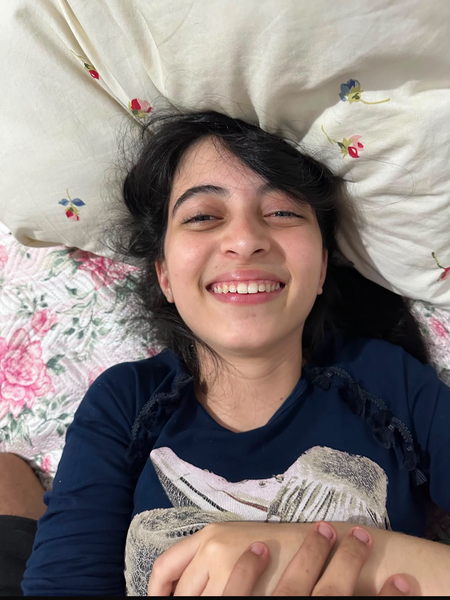
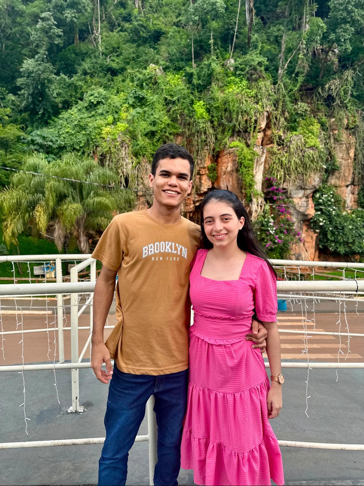
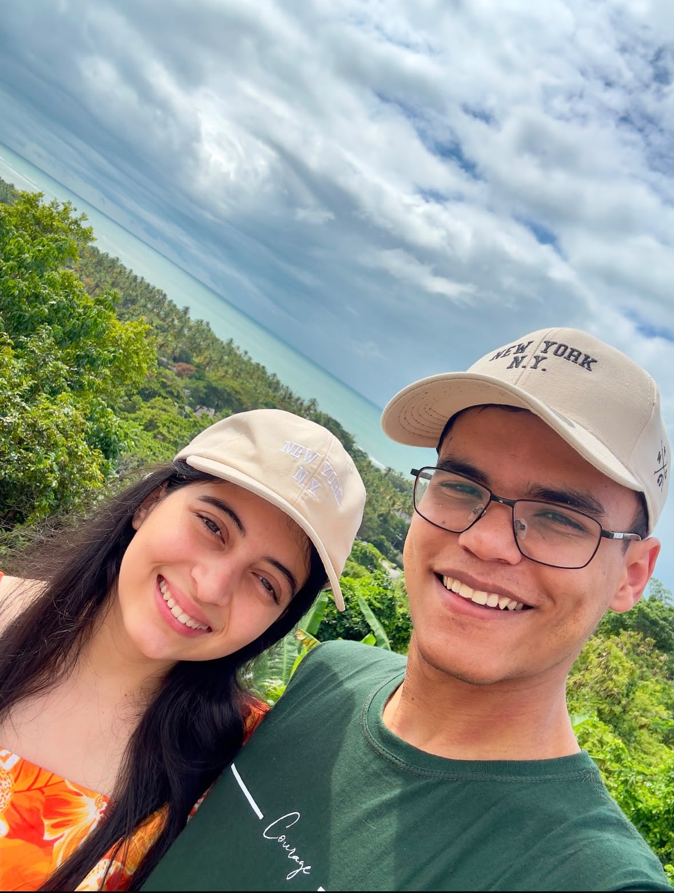
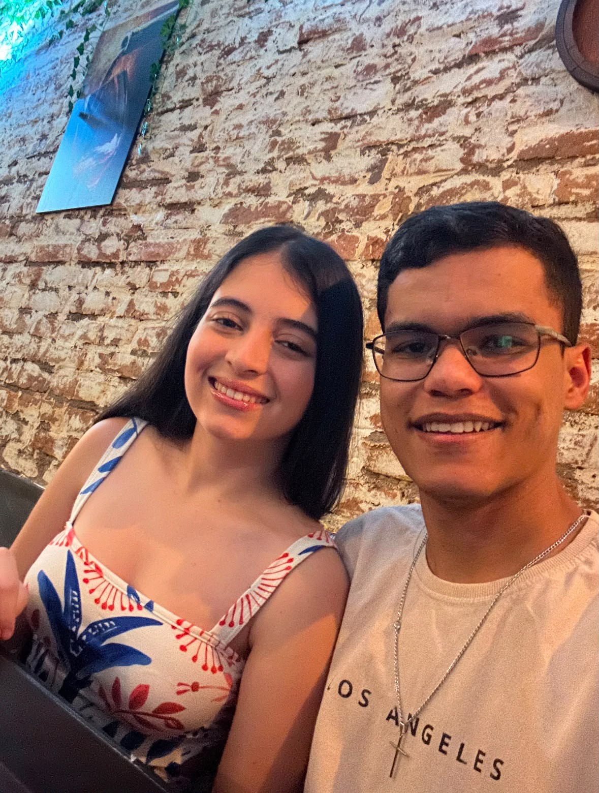

Experiência Exclusiva
Algumas histórias são contadas. Outras são vividas. Esta é a galeria imersiva dos nossos melhores momentos.
Capítulo I
Aquele instante em que o universo conspirou. Não foi sorte, foi roteiro. O primeiro olhar que provou que o destino tem um timing perfeito.

Capítulo II
O frio na barriga do primeiro encontro. Aquele sorriso que desarmou qualquer defesa e me fez perceber que a minha melhor versão era do seu lado.

Capítulo III
As viagens, as risadas, a parceria inabalável. Construímos um império particular onde a única moeda é o amor que entregamos um ao outro.


Status Atual
De todos os projetos da minha vida, nós somos o meu favorito. Brindemos ao que construímos até aqui, e ao que ainda vamos conquistar. Te amo.

Carregando o próximo nível...
Save the Date
A data está guardada. O destino já está selado.
A nossa maior aventura ainda está por vir.